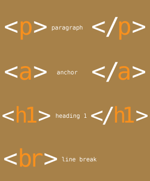

HTML, or Hypertext Markup Language, is the language used to describe the structure of content on the web. As with other markup languages, it uses tags to identify page elements and describe the page’s semantic structure. An easy way to visualize this is to consider the various types of documents you see on a day-to-day basis, like magazine and newspaper articles or documents created in a program like Microsoft Word. The formatting of those documents ensures that the information is presented clearly, with a distinct hierarchy. This allows readers to quickly scan the page and determine which information is important and how the content relates to each other. HTML allows us to do that for web pages by first establishing the overall document structure, and then formatting elements like headings and paragraphs.HTML timeline
- 1991: Tim Berners-Lee publishes “HTML Tags” which describes the initial 18 elements of HTML
- 1992: NCSA develops the Mosaic browser, which will eventually evolve into Netscape
- 1994: The Internet Engineering Task Force (IETF) creates an HTML working group to develop HTML specifications. Later that year the W3C was created to foster an open standards environment
- 1995: HTML 2.0 specification is published
- 1995: Microsoft releases Internet Explorer to compete with Netscape
- 1997: HTML 3.2 specification is published
- 1997: HTML 4.0 specification is published
- 2000: XHTML 1.0 is published as a W3C recommendation
- 2004: The WHATWG forms to continue work on HTML
- 2006: W3C announces it will work with the WHATWG on HTML5
- 2009: XHTML Working Group charter expires
- 2012: W3C and WHATWG announce they will develop the HTML5 standard separately
HTML timeline
1991: Tim Berners-Lee publishes “HTML Tags” which describes the initial 18 elements of HTML
1992: NCSA develops the Mosaic browser, which will eventually evolve into Netscape
1994: The Internet Engineering Task Force (IETF) creates an HTML working group to develop HTML specifications. Later that year the W3C was created to foster an open standards environment
1995: HTML 2.0 specification is published
1995: Microsoft releases Internet Explorer to compete with Netscape
1997: HTML 3.2 specification is published
1997: HTML 4.0 specification is published
2000: XHTML 1.0 is published as a W3C recommendation
2004: The WHATWG forms to continue work on HTML
2006: W3C announces it will work with the WHATWG on HTML5
2009: XHTML Working Group charter expires
2012: W3C and WHATWG announce they will develop the HTML5 standard separately